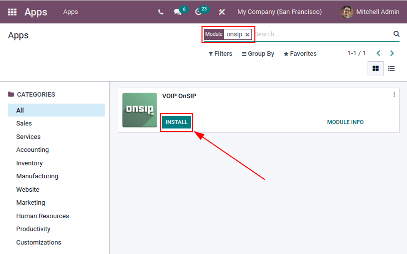

Utilice los servicios de VoIP en Odoo con OnSIP¶
Importante
Los servicios de OnSIP VoIP solo están disponibles en Estados Unidos (EE. UU.) en sus 48 estados contiguos. Los cargos por el servicio pueden ser más costosos en Alaska y Hawái.
Además, para utilizar el servicio es necesaria una dirección de facturación en Estados Unidos y una tarjeta de crédito del mismo país.
Antes de configurar una cuenta con OnSIP, la empresa deberá asegurarse de que los números telefónicos empresariales se puedan transferir a OnSIP.
OnSIP hace todo lo posible por funcionar con todos los proveedores de servicios telefónicos. Sin embargo, ciertas normas locales o regionales pueden impedir que el proveedor actual de la empresa libere el número.
Introducción¶
La VoIP de Odoo se puede configurar para trabajar de forma conjunta con OnSIP (consulte la página de Odoo). OnSIP es un proveedor de VoIP y necesita una cuenta para utilizar este servicio.
Asegúrese de que el área principal de la empresa y las áreas a las que llamará estén cubiertas por los servicios de OnSIP antes de configurar una cuenta.
Después de abrir una cuenta en OnSIP, siga el procedimiento de configuración que se encuentra a continuación para configurarla en una base de datos de Odoo.
Configuración¶
Para configurar la base de datos de Odoo y que se conecte a los servicios de OnSIP, primero vaya a desde el tablero principal de Odoo. Luego, elimine el filtro predeterminado Aplicaciones de la barra Buscar… y busque VoIP OnSIP.
Luego, instale el módulo VOIP OnSIP.
Ajustes de VoIP en Odoo¶
Después de instalar el módulo VOIP OnSIP, vaya a la , diríjase a la parte de abajo hasta la sección Integraciones y localice los campos Asterisk (VoIP). Luego, proceda a completar esos tres campos con la siguiente información:
Dominio OnSIP: el dominio que se le asignó al crear una cuenta en OnSIP.
WebSocket:
wss://edge.sip.onsip.comEntorno VoIP: seleccione Producción.

Truco
Para acceder al dominio OnSIP, vaya a OnSIP e inicie sesión. Luego, haga clic en el enlace Administradores ubicado en la parte superior derecha de la página.
A continuación, en el menú de la izquierda, haga clic en Usuarios y seleccione cualquier usuario, este se abrirá en la pestaña Información del usuario de forma predeterminada.
Haga clic en la pestaña Ajustes telefónicos para abrir las credenciales de configuración de OnSIP (es la primera columna).
Ajustes de usuario en Odoo¶
A continuación, deberá configurar el usuario en Odoo. Cada usuario asociado a un usuario de OnSIP se debe configurar también en los ajustes y preferencias del usuario en Odoo.
Para ello, vaya a la .
En el formulario del usuario, haga clic en Editar para configurar su cuenta de OnSIP. Después, haga clic en la pestaña Preferencias y vaya hasta la sección VoIP.
Complete los campos con las credenciales de OnSIP en esta sección.
Complete los siguientes campos con las credenciales asociadas que se proporcionan a continuación:
Nombre de usuario VoIP / Número de extensión = Nombre de usuario OnSIP.
Nombre de usuario de autorización OnSIP = Nombre de usuario de autorización OnSIP.
Secreto VoIP = Contraseña SIP OnSIP.
Número de dispositivo externo = Ext. (extensión sin la
x) OnSIP.

Truco
Puede acceder a la extensión de OnSIP desde la línea del recuadro Usuario ubicado sobre las pestañas.
Una vez que haya completado estos pasos, desplácese fuera del formulario de usuario en Odoo para guardar los ajustes.
Una vez que haya guardado todo, los usuarios de Odoo podrán realizar llamadas telefónicas si hacen clic en el icono ☎️ (teléfono) ubicado en la esquina superior derecha de Odoo.
Ver también
Consulte la base de información de OnSIP para obtener más información sobre los pasos adicionales de configuración y resolución de problemas.
Llamadas entrantes¶
La base de datos de Odoo tambi√©n recibe llamadas entrantes que abren ventanas emergentes en Odoo. Haga clic en el icono verde üìû (tel√©fono) para responder la llamada cuando aparezcan estas ventanas emergentes.
Haga clic en el icono rojo üìû (tel√©fono) para ignorar la llamada.

Ver también
Solución de problemas¶
Parámetros faltantes¶
Si aparece el mensaje de parámetros faltantes en el widget de Odoo, asegúrese de actualizar la ventana (o pestaña) de Odoo e inténtelo de nuevo.

Número incorrecto¶
Si aparece el mensaje Número incorrecto en el widget de Odoo, asegúrese de utilizar el formato internacional para el número, debe comenzar con el código internacional del país.
Un código del país es un código de ubicación que permite acceso al sistema telefónico del país deseado. Primero se marca el código del país y después el número deseado. Cada país tiene su propio código de país específico.
Por ejemplo, 16505555555 (donde 1 corresponde al prefijo internacional para Estados Unidos).

Ver también
Para consultar una lista completa de códigos de país vaya a https://countrycode.org.
OnSIP en celulares¶
Es posible usar una aplicación de softphone en un celular junto a la VoIP de Odoo para que un usuario haga y reciba llamadas cuando no se encuentra usando la computadora.
Esto es útil para realizar llamadas mientras se encuentra en marcha y para asegurarse de escuchar las llamadas entrantes. Cualquier softphone SIP es compatible.